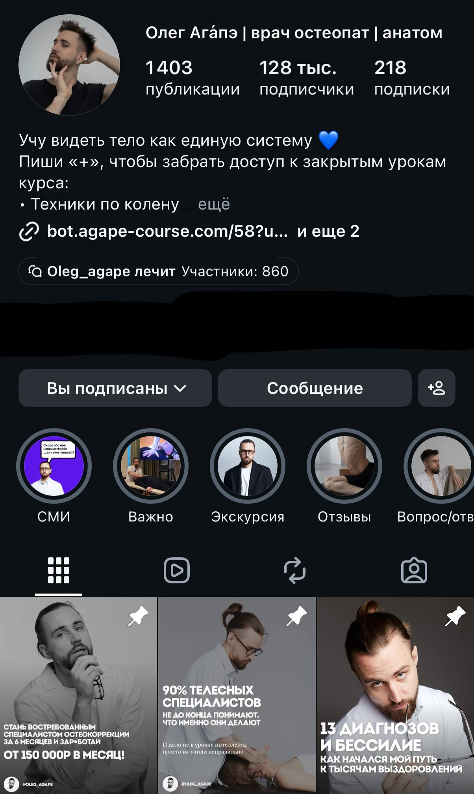
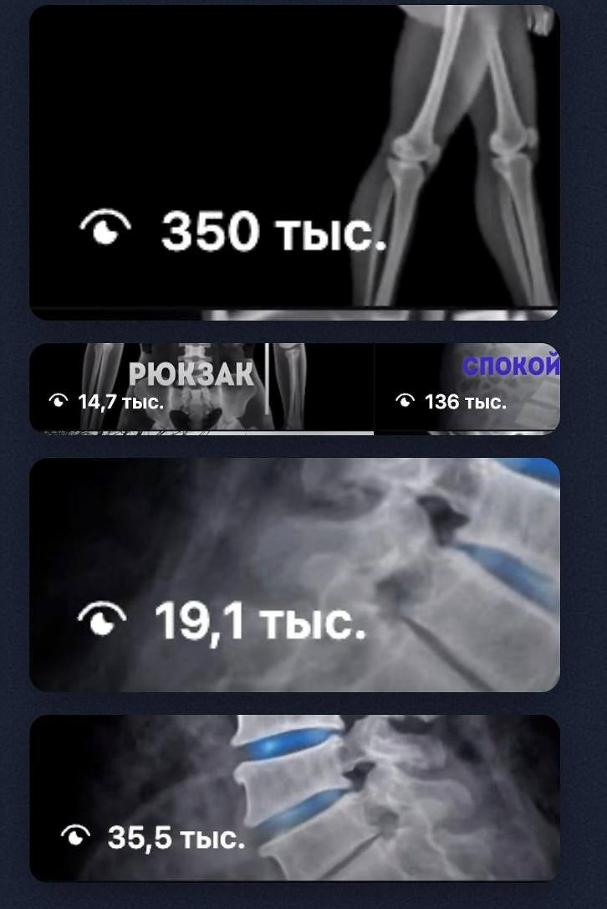
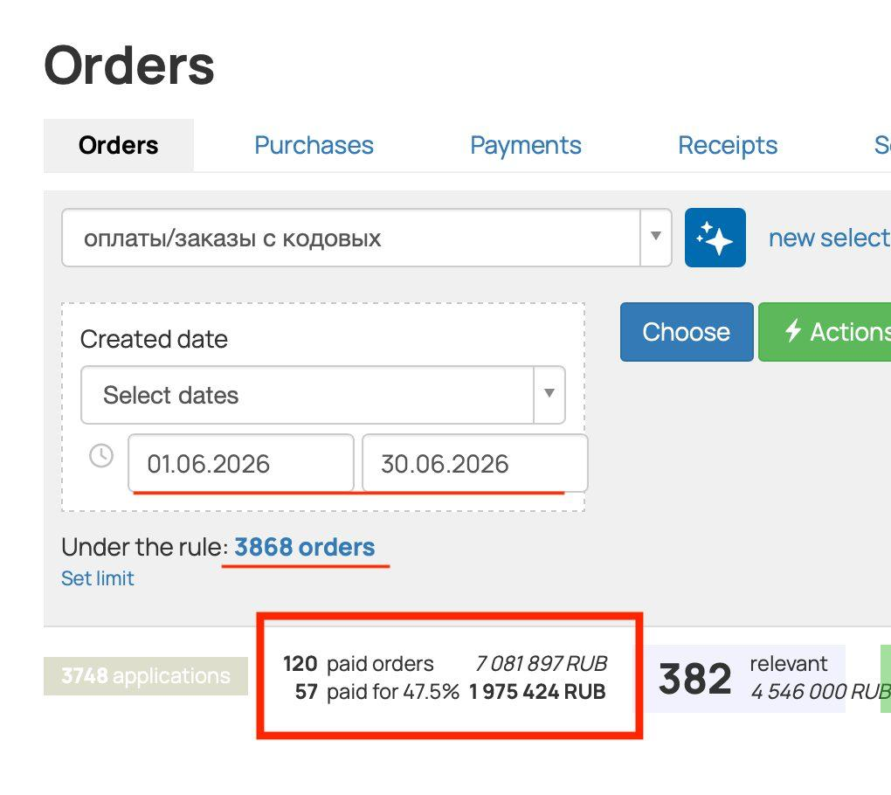

После университета Александра никуда не брали без опыта. Он ушёл на фриланс, рисовал карточки для маркетплейсов, монтировал видео, снимал на телефон и вёл соцсети.
Времени уходило море. Правки в духе «поиграй со шрифтами» тянулись ночами, а удачный месяц приносил около 40 тысяч. Александр видел потолок примерно в 100 тысяч и понимал, что каждая новая тысяча снова потребует его часов.
3 868заказов в отчёте за месяц
1 975 424 ₽подтверждённых оплат
25 000новых подписчиков за несколько месяцев
Что изменило доход
Александр перестал брать россыпь мелких задач и начал продавать контент-заводы целиком: сбор источников, производство материалов с ИИ, карусели, публикацию и сопровождение. За комплексную систему клиент платит от 100 тысяч, а дальнейшая работа приносит повторные платежи.
Точка А
Диплом есть, опыта нет, фриланс забирает ночи
1
После университета
Работодатели хотели опыт. Александр выбрал знакомые навыки: Photoshop, видео, съёмку и SMM. Так начался фриланс.
2
Много задач за маленький чек
Каждая правка требовала личного времени. Ночью он двигал шрифты и переделывал монтаж, утром искал следующего клиента. В хороший месяц выходило около 40 тысяч рублей.
3
Поездка в Москву
На выходных Александр познакомился с девушкой в «Золотом яблоке». Она ему понравилась, и мысль о пустых карманах задела сильнее очередной правки. Он начал искать навык с более высоким чеком.
4
Первые серьёзные шаги в ИИ
Александр смотрел YouTube, читал Telegram и попал на материалы Макса. Его зацепили прямой разговор, пошаговые инструкции и наставник, который помогает довести проект до результата.
«Раньше я продавал бесконечный процесс и правки. Получаешь немного, а времени тратишь дохрена. А тут я начал крупные проекты продавать, тот же контент-завод. Так в моей жизни появились чеки за 100 000 рублей»Александр
Точка Б
Несколько проектов на сопровождении и доход от 200 тысяч
Навыки контента помогли Александру быстрее войти в новую услугу. Главный сдвиг произошёл в самом предложении. Клиент покупал готовую систему производства контента, которую можно измерить просмотрами, подписчиками, заявками и продажами.
Один из проектов пришёл от врача-остеопата Олега Агапэ. У него есть блог, обучение и большая аудитория. Александр собрал для команды контент-завод и остался сопровождать его несколько месяцев.
Instagram · проект врача-остеопата

На момент скриншота в профиле 128 тысяч подписчиков. По данным проекта, за несколько месяцев аудитория выросла на 25 тысяч.
Контент с ИИ
Темы, черновики, карусели и другие форматы собираются в одной системе. Ручная работа остаётся на выборе идей, фактах и финальной проверке.
Миллионы просмотров
Контент проекта регулярно набирает десятки и сотни тысяч просмотров. Лучшие материалы дают охват всей системе.
Продажи продукта
Контент ведёт человека в воронку и дальше в оплату обучения. Поэтому работа специалиста оценивается по деньгам бизнеса.
Просмотры контента

Отдельные публикации получили 136, 191 и 350 тысяч просмотров. Контент-завод позволяет регулярно проверять новые темы и повторять сильные углы.
Доказательство деньгами
Июнь: 3 868 заказов в отчёте и почти 2 млн ₽ оплат
На скриншоте выбран период с 1 по 30 июня 2026 года. Система показывает 3 868 заказов по условию выборки. Отдельная строка фиксирует 57 оплат на 1 975 424 ₽. Это округлённо 2 млн рублей за месяц.
Orders · 01.06.2026–30.06.2026

Красным выделены 57 оплаченных заказов на 1 975 424 ₽. В верхней части отчёта зафиксировано 3 868 заказов по выбранному условию.
Хочешь собрать первую ИИ-услугу руками?На бесплатном тест-драйве разберёшь рынок, сделаешь первый проект и получишь семь способов найти клиента.
Забрать тест-драйв
Практическая часть
Как собрать карусель с ИИ за 7 шагов
Карусель состоит из 7–15 слайдов. У каждого слайда своя роль: обложка, проблема, разбор, шаги и призыв. Ниже сокращённая схема, по которой такие материалы можно выпускать регулярно.
1
Выбери один угол
Возьми вопрос клиента, сильный пост, чужую залетевшую тему или материал эксперта. Сформулируй одну мысль, которую человек унесёт после последнего слайда.
2
Выбери структуру
Разложи мысль на 7–15 слайдов. Рабочая база: обложка, узнаваемая проблема, причина, разбор, конкретные шаги, пример, вывод и CTA.
3
Согласуй обложку
Заголовок даёт карусели шанс на охват. Проверь четыре вещи: он понятен отдельно от поста, обещает конкретное действие или результат, звучит простым русским вслух и сохраняет тему достаточно широкой.
4
Сделай план слайдов
Напиши по одному тезису на каждый экран. На этом этапе легко убрать повторы, переставить аргументы и увидеть провал в логике.
5
Дай каждому экрану одну работу
Один слайд объясняет одну мысль. Короткий заголовок, несколько строк раскрытия и крупный кегль читаются с телефона. Истории и примеры лучше дробить по смыслу.
6
Собери отдельный CTA-слайд
Последний экран продолжает тему и показывает следующий шаг. В бизнес-нише работают цифры и измеримая польза. В здоровье, психологии и отношениях сильнее заходят понятный результат и неочевидное наблюдение.
7
Проверь и сверстай
Прочитай всё вслух, сверь факты и убери канцелярит. После этого передай текст в Gamma, Claude, ChatGPT или Canva и собери слайды в фирменном стиле.
Команда для первого черновикаСобери Instagram-карусель на 9 слайдов по материалу ниже. Сначала предложи три угла и дождись выбора. Затем дай пять вариантов обложки и подзаголовка. После согласования составь план: один тезис на слайд. Структура: обложка, проблема, причина, разбор, три практических шага, вывод, CTA. Используй только факты из материала, ничего не придумывай. Финальный текст прочитай вслух и упрости тяжёлые формулировки. Материал: [вставить источник]. Куда ведём читателя: [указать следующий шаг].
Проверка перед публикацией
- Обложка понятна человеку, который ещё не видел профиль
- В карусели одна главная мысль и понятный маршрут
- Каждый слайд раскрывает один тезис
- Факты и цифры сверены с источниками
- Текст читается с телефона без увеличения
- Последний экран объясняет пользу следующего шага
- Весь текст вслух звучит как речь автора
Модель дохода
За что здесь платят от 100 тысяч
Сборка системы
Специалист собирает источники, правила работы, шаблоны и процесс выпуска. Клиент получает работающий контент-завод целиком.
Производство
Темы превращаются в карусели, посты и короткие видео. Объём выпуска растёт, а эксперт сохраняет свой голос и факты.
Сопровождение
Систему нужно дорабатывать, обновлять и подстраивать под результаты. Поэтому после разового чека остаётся ежемесячная оплата.
Александр ведёт несколько проектов одновременно. Его доход в отдельные месяцы превышает 200 тысяч рублей. Портфолио уже приводит рекомендации, а часть клиентов он находил через ИИ-агента, которого получил на наставничестве.
Частые вопросы
Что Александр отвечает новичкам
«Я никогда не собирал контент-завод»
Александр тоже собирал многие элементы впервые. Он шёл по инструкциям, использовал шаблоны и показывал клиентам демо. Готовая работа отвечает на вопрос об опыте быстрее резюме.
«Нужно быть дизайнером или программистом?»
Старый опыт помогает быстрее войти в задачу, но обязательным условием он не является. Текст, структуру и черновую вёрстку собирает ИИ. Специалист отвечает за факты, решения, проверку и пользу для клиента.
«Рынок уже заполнен ИИ-специалистами»
В дизайне Александр конкурировал с десятками исполнителей на тестовых заданиях. На контент-заводы он видит дефицит. Демо и понятный результат закрывают большую часть диалогов в оплату.
«Где взять первого клиента?»
Выбери проект с активным блогом и понятным продуктом. Разбери пять сильных публикаций, собери одну карусель под его тему и покажи готовый пример. Разговор начинается с работы на экране, поэтому клиенту легче оценить пользу.
Что изменилось вне работы
Москва, отношения и первая поездка за границу
С той девушкой из «Золотого яблока» Александр теперь вместе. Они перебрались в Москву. Недавно он впервые съездил за границу просто отдохнуть. Год назад такие расходы и свободный график казались ему далёкими.
Его совет фрилансерам прямой: прекращать продавать ночи за бесконечные правки и осваивать услуги, где бизнес платит за измеримый результат.
«Хватит продавать свои ночи за бесконечные правки. Ты уже в онлайне, тебе будет даже проще, чем остальным. Реально нужно переходить в услуги, где можно поставить нормальный чек и не будет дикой конкуренции»Александр
Следующий шаг
Попробуй профессию бесплатно
На тест-драйве ты пройдёшь пять коротких уроков и соберёшь первую работу руками. После этого станет понятно, подходит ли тебе рынок ИИ-услуг и как на нём зарабатывают.

Александр, 24 года
Было: фриланс, ночные правки, около 40к в удачный месяц
Сейчас ведёт несколько проектов, собирает контент-заводы и автоматизации. Один клиент получил 3 868 заказов в отчёте и 1 975 424 ₽ оплат за месяц.
100к+чек за систему
200к+доход в месяц
+25 000подписчиков клиенту
Забрать бесплатный тест-драйв
Внутри пять уроков: рынок ИИ-услуг, модель дохода 150–300 тысяч, первая работа, семь способов найти клиента и дорожная карта дальнейших шагов.